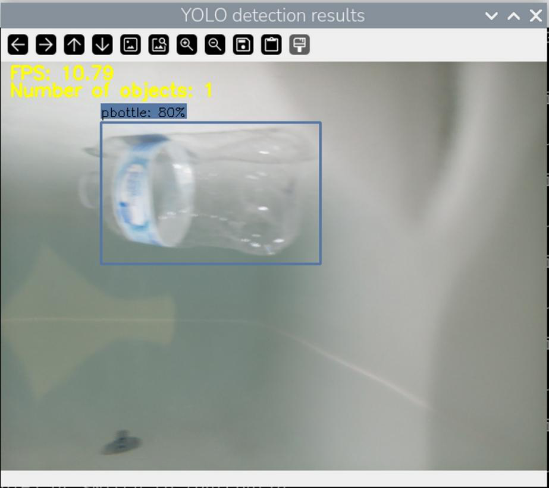
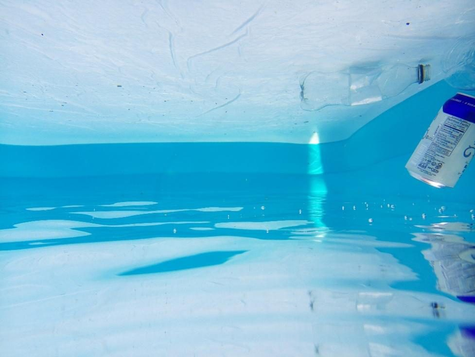
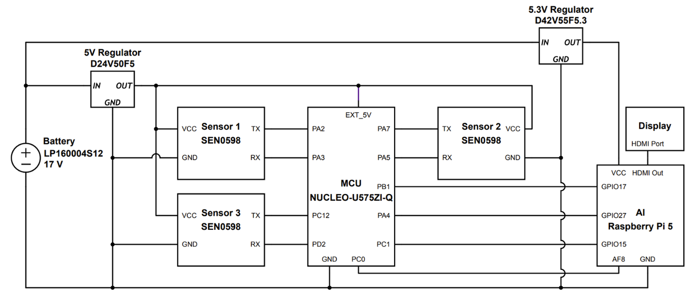

Overview
Over two semesters, our team of four designed and built a device that detects and identifies plastic debris in waterways, made to integrate with commercial mini class remotely operated vehicles (ROVs) and autonomous underwater vehicles. The motivation was the volume of submerged plastic polluting freshwater bodies like the Great Lakes, where manual and surface level searching is slow and inefficient. The system pairs a low power microcontroller with an edge AI vision unit so that the power hungry camera stage only runs when something is actually there.
The design is organized into four subsystems: a three sensor sonar array, an ultra low power STM32U575 microcontroller, a Raspberry Pi 5 edge AI unit, and a regulated battery power supply. I led the system design across the team and owned the AI model and the wake on detection firmware.
Demo
Drop your demo clip in and it plays right here. See the comment in this file for the two ways to add it (a YouTube link or a local mp4 in the images folder).


How it works
The system runs a two stage pipeline that trades a little detection latency for a large power saving. The STM32U575 stays awake at all times as a tripwire, continuously polling the sonar array. When the sonar confirms an object inside the one meter range, the microcontroller raises a hardware wake up signal on a GPIO pin to bring the Raspberry Pi 5 out of idle. The Pi then captures a live feed at 8 frames per second through its AI camera and runs each frame through the YOLOv11 model. If the model is at least about 80 percent confident that the object is plastic, it logs an image along with a CSV record of the timestamp, confidence score, and classification for later review.


What I built
1) System design lead
- Led the overall system design for the team of four, from the initial requirements through the final hardware and software integration.
- Defined how the sonar, microcontroller, AI, and power subsystems hand off to each other so the full detection pipeline behaves as one system.
2) Edge AI detection model
- Chose the YOLOv11 architecture for its single pass, real time inference, which fits the limited compute of a battery powered Raspberry Pi 5.
- Ran a proof of concept on a public rock paper scissors dataset (3,129 images) and confirmed the pipeline by reaching a mean average precision of about 0.87.
- Captured over 750 images of bottles and cans in an inflatable pool, annotated bounding boxes with makesense.ai, and fine tuned the model for the underwater environment so it learned the real reflections, lighting, and distortion.
- Trained for 200 epochs over roughly 4 hours and 45 minutes. The custom model ran near 10 frames per second at 640 by 640 with about 0.1 second inference time.
3) Wake on detection firmware
- Wrote C firmware for the STM32U575 that polls the sonar array and raises a low power hardware interrupt to wake the AI unit only when an object is present, keeping the compute heavy vision stage idle the rest of the time.
- Used the sonar layer as the always on first stage and the camera with AI as the second, higher cost confirmation stage.
Inside the subsystems
Sonar array
- 3 × SEN0599 ultrasonic sensors
- Arranged in a 30° arc, UART to MCU
- Operates above 50 kHz, safe for marine life
- IP68 rated, 6 m max range
Microcontroller
- STM32U575, Cortex-M33 to 160 MHz
- 3.3 V logic, no level shifting needed
- Always on tripwire, GPIO wake up signal
- Built to a 150 mW power budget
AI unit
- Raspberry Pi 5 with a 26 TOPS Hailo AI Hat
- AI camera (IMX500) at 8 FPS
- Binary plastic vs non plastic, CSV logging
- 4.25 W idle, 13.5 W under load
Power
- 14.8 V, 16 Ah LiPo battery
- About 9.5 hours of runtime
- Dual regulation, 5.3 V for Pi, 5 V for MCU
- IP68 rated enclosure
Results and verification
- The completed prototype met nearly all of the user, system, and functional requirements during final verification testing.
- Plastic bottles were correctly identified once confidence passed about 80 percent, while aluminum cans were not falsely flagged as plastic.
- The system weighed 3.18 kg, came in under the 4 kg limit, and fit the size envelope for a mini class ROV.
- Estimated runtime of about 9.5 hours far exceeded the original 3 to 5 hour target, and the full build came in at $1,219.83, under the $1,500 budget.
- Sonar detection held across 20 cm to 100 cm with an average error near 3.62 cm, enough to reliably trigger the AI stage.